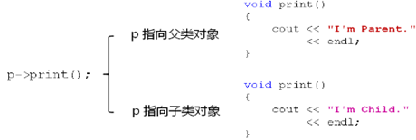

1，函数重写回顾：
1，父类中被重写的函数依然会继承给子类；
2，子类中重写的函数将覆盖父类中的函数；
1，重写父类当中提供的函数是因为父类当中提供的这个函数版本不能满足我们的需求，因此我们要重写；
2，期望只要是子类对象，则调用子类当中的版本，而不是父类当中定义的函数版本；
3，通过作用域分辨符（::）可以访问到父类中的函数；
1，代码示例：
Child c;
Parent* p = &c;
c.Parent::print(); // 从父类中继承；I'm Parent.
c.print(); // 在子类中重写；I'm Child.
p->print(); // 父类中定义；I'm Parent.不是我们期望的版本，因为 p 指向了子类对象，期望调用子类版本
2，面相对象中期望的行为：
1，根据实际的对象类型判断如何调用重写函数；
1，而不是根据指针类型（编译器默认的安全行为）；
2，父类指针（引用）指向：
1，父类对象，则调用父类中定义的函数；
2，子类对象，则调用子类中定义的重写函数；
3，面向对象中的多态的概念：

1，根据实际的对象类型决定函数调用的具体目标；
1，相同的行为方式可能导致不同的行为结果，即产生了多种形态行为，即多态；
2，同样的调用语句在实际运行时有多种不同的表现形态；
1，同一行语句展现了多种不同的表现形态，多态本质；
4，C++ 语言直接支持多态的概念：
1，通过使用 virtual 关键字对多态进行支持；
1，什么时候用 virtual ?
2，定义类的时候，觉得某一个函数在后续被继承的过程当中，有可能被重写，就是用 virtual 关键字修饰这个函数；
2，被 virtual 声明的函数被重写后具有多态特性；
1，函数名和参数都必须一样，若函数名相同但参数不同，这是同名覆盖；
3，被 virtual 声明的函数叫做虚函数（因为 virtual 的意思就是虚拟的）；
1，虚函数被继承后依然是虚函数，不用再被 virtual 修饰；
5，多态的初体验编程实验：
1 #include <iostream>
2 #include <string>
3
4 using namespace std;
5
6 class Parent
7 {
8 public:
9 virtual void print() // 这个函数可能被继承的子类重写，所以加上virtual 关键字来修饰它，称为虚函数，实现多态；
10 {
11 cout << "I'm Parent." << endl;
12 }
13 };
14
15 class Child : public Parent
16 {
17 public:
18 void print() // 虽然没有写 virtual 关键字，但是由于继承的关系，它就是虚函数；一般工程中没必要在子类中写 virtual；
19 {
20 cout << "I'm Child." << endl;
21 }
22 };
23
24 void how_to_print(Parent* p)
25 {
26 p->print(); // 希望展现多态行为；
27 }
28
29 int main()
30 {
31 Parent p;
32 Child c;
33
34 how_to_print(&p); // 期望打印: I'm Parent. 实际打印：I'm Parent.
35 how_to_print(&c); // 期望打印: I'm Child. 实际打印：I'm Child.
36
37 return 0;
38 }
6，多态意义：
1，在程序运行过程中展现出动态的特性；
1，编译时无法决定究竟调用哪一个版本的实现；
2，函数重写必须多态实现，否则没有意义；
1， C++ 后续语言（Java、C#）中，只要是重写，一定是虚函数，不需要显示声明 virtual 关键字；
3，多态是面向对象组件化程序设计的基础特性；
1，后续学习中多态特性会被变着花样玩儿，特别是设计模式中绝大多数模式都和多态相关；
7，理论中的概念：
1，静态联编：
1，在程序的编译期间就能确定具体的函数调用；
1，如函数重载；
2，动态联编（多态）：
1，在程序实际运行后才能确定具体的函数调用；
1，如函数重写；
8，动态联编与静态联编实例分析：
1 #include <iostream>
2 #include <string>
3
4 using namespace std;
5
6 class Parent
7 {
8 public:
9 virtual void func()
10 {
11 cout << "void func()" << endl;
12 }
13
14 virtual void func(int i)
15 {
16 cout << "void func(int i) : " << i << endl;
17 }
18
19 virtual void func(int i, int j)
20 {
21 cout << "void func(int i, int j) : " << "(" << i << ", " << j << ")" << endl;
22 }
23 };
24
25 class Child : public Parent
26 {
27 public:
28 void func(int i, int j)
29 {
30 cout << "void func(int i, int j) : " << i + j << endl;
31 }
32
33 void func(int i, int j, int k) // 子类同名覆盖父类当中的函数，重载同一作用域当中的函数；
34 {
35 cout << "void func(int i, int j, int k) : " << i + j + k << endl;
36 }
37 };
38
39 void run(Parent* p)
40 {
41 p->func(1, 2); // 展现多态的特性，动态联编
42 }
43
44 int main()
45 {
46 Parent p;
47
48 p.func(); // 静态联编
49 p.func(1); // 静态联编
50 p.func(1, 2); // 静态联编
51
52 cout << endl;
53
54 Child c;
55
56 c.func(1, 2); // 静态联编
57
58 cout << endl;
59
60 run(&p);
61 run(&c);
62
63 return 0;
64 }
9，多态编程实验：
1 #include <iostream>
2 #include <string>
3
4 using namespace std;
5
6 class Boss
7 {
8 public:
9 int fight()
10 {
11 int ret = 10;
12
13 cout << "Boss::fight() : " << ret << endl;
14
15 return ret;
16 }
17 };
18
19 class Master
20 {
21 public:
22 virtual int eightSwordKill()
23 {
24 int ret = 8;
25
26 cout << "Master::eightSwordKill() : " << ret << endl;
27
28 return ret;
29 }
30 };
31
32 class NewMaster : public Master
33 {
34 public:
35 int eightSwordKill() // 重写八剑齐飞
36 {
37 int ret = Master::eightSwordKill() * 2;
38
39 cout << "NewMaster::eightSwordKill() : " << ret << endl;
40
41 return ret;
42 }
43 };
44
45 void field_pk(Master* master, Boss* boss)
46 {
47 int k = master->eightSwordKill(); // 赋值兼容性加上函数重载，根据实际的对象调用函数；
48 int b = boss->fight();
49
50 if( k < b )
51 {
52 cout << "Master is killed..." << endl;
53 }
54 else
55 {
56 cout << "Boss is killed..." << endl;
57 }
58 }
59
60 int main()
61 {
62 Master master;
63 Boss boss;
64
65 cout << "Master vs Boss" << endl;
66
67 field_pk(&master, &boss);
68
69 cout << "NewMaster vs Boss" << endl;
70
71 NewMaster newMaster;
72
73 field_pk(&newMaster, &boss);
74
75 return 0;
76 }
10，小结：
1，函数重写只可能发生在父类与子类之间；
2，根据实际对象的类型确定调用的具体函数；
3，virtual 关键字是 C++ 中支持多态的唯一方式；
4，被重写的虚函数课表现出多态的特性；
5，虚函数和多态的关系：
1，多态是面向对象理论当中的一个概念，它和具体的程序设计语言是没有关系的，也就是说多态指的仅仅是相同的行为方式，不同的行为结果；
2，这种多态的表现形式在 C++ 中由虚函数来实现；